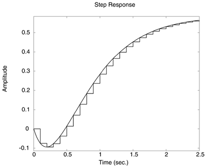
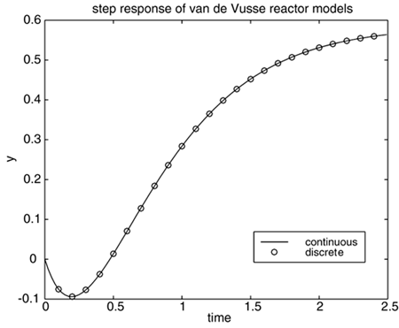
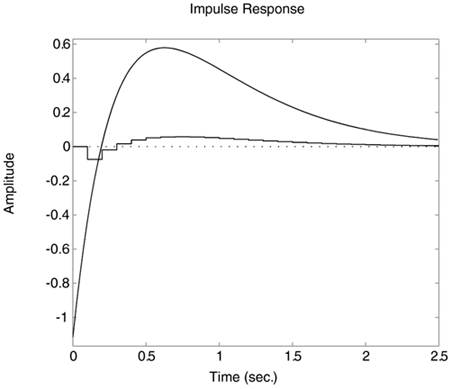

| [ Team LiB ] |
|
M4.5 Step and Impulse ResponsesStep responses of LTI objects can be determined or compared in a number of different ways. The following command compares the step responses of the continuous and discrete-time van de Vusse models previously entered in the MATLAB command window. » step(vdv_tfc,vdv_tfd) The resulting response is shown in Figure M4-1. Notice that a zero-order hold has been applied to the discrete step response. Also, note that the step command assumes that the time unit is seconds, which is not normally the case for chemical process systems. Figure M4-1. Step responses of continuous and discrete van de Vusse reactor model. Illustration of zero-order hold. Notice the default labeling of a time unit of seconds. Alternatively, the following sequence of commands can be used to generate Figure M4-2:
» [yc,tc] = step(vdv_tfc);
» [yd,td] = step(vdv_tfd);
» plot(tc,yc,td,yd,'o')
» xlabel('time')
» ylabel('y')
» title('step response of van de Vusse reactor models')
» legend('continuous','discrete')
Similarly, the impulse responses shown in Figure M4-3 are generated using » impulse(vdv_tfc,vdv_tfd) Notice that the tremendous difference in the impulse response for the continuous and discrete-time models is due to the pulse implementation on the discrete-time model. Figure M4-2. Step responses of continuous and discrete van de Vusse reactor model. Figure M4-3. Impulse responses of continuous and discrete van de Vusse reactor model. Notice the default labeling with a time unit of seconds. |
| [ Team LiB ] |
|